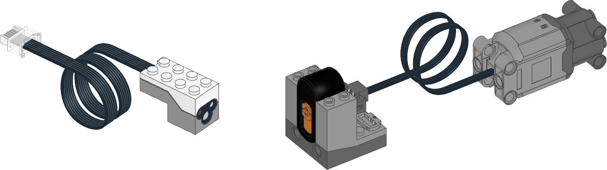

| ✅ | ✅ | ✅ | ✅ | ✅ | ✅ | ❌ |
|---|
Power Functions
ColorDistanceSensor は
赤外線信号を送信して、Power Functions の赤外線レシーバーを制御できます。
この手法を使って、M・L・XL・トレインモーターを制御できます。
赤外線の到達距離は約30 cmまでに限られており、角度や周囲の環境によって
変わります。

Figure 3 Powered Up の
ColorDistanceSensor
（左）、Power Functions の赤外線レシーバー（中央）、
Power Functions モーター（右）。この例では、レシーバーは
チャンネル1を使い、赤いポートにモーターを接続しています。
- class PFMotor(sensor, channel, color, positive_direction=Direction.CLOCKWISE)
ColorDistanceSensorの 赤外線機能を使ってPower Functionsモーターを制御します。- Parameters:
sensor (ColorDistanceSensor) – センサーオブジェクト。
channel (int) – レシーバーのチャンネル番号:
1、2、3、4のいずれか。color (Color) – レシーバーの色マーカー:
Color.BLUEまたはColor.REDpositive_direction (Direction) – 正のデューティサイクル値を 与えたときにモーターが回転する方向。
使用例
Power Functions モーターを制御する
from pybricks.parameters import Color, Port
from pybricks.pupdevices import ColorDistanceSensor, PFMotor
from pybricks.tools import wait
# センサーを初期化する。
sensor = ColorDistanceSensor(Port.B)
# チャンネル1の赤い出力につながるモーターを初期化する。
motor = PFMotor(sensor, 1, Color.RED)
# 回転して止まる。
motor.dc(100)
wait(1000)
motor.stop()
wait(1000)
# 半分の速さで逆回転して止まる。
motor.dc(-50)
wait(1000)
motor.stop()
複数の Power Functions モーターを制御する
from pybricks.parameters import Color, Direction, Port
from pybricks.pupdevices import ColorDistanceSensor, PFMotor
from pybricks.tools import wait
# センサーを初期化する。
sensor = ColorDistanceSensor(Port.B)
# チャンネル別に複数のモーターを使える。
arm = PFMotor(sensor, 1, Color.BLUE)
wheel = PFMotor(sensor, 4, Color.RED, Direction.COUNTERCLOCKWISE)
# 両方のモーターを加速する。使えるのはこれらの値だけ。
# それ以外の値は近いものに切り捨てられる。
for duty in [15, 30, 45, 60, 75, 90, 100]:
arm.dc(duty)
wheel.dc(duty)
wait(1000)
# 信号を確実に届けるため、コマンドの間に短い
# 間が入る。そのため速度の変化と
# 停止のタイミングが少しずつずれる。
# 両方のモーターにブレーキをかける。
arm.brake()
wheel.brake()